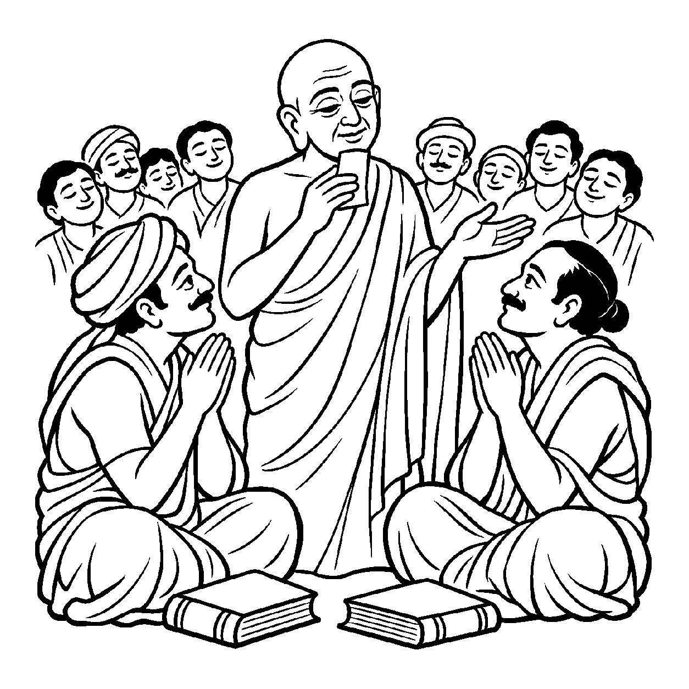

આકાશમાં કાળા વાદળો ઘેરાય ત્યારે વ્યવહારથી કહેવાય કે "આકાશ ઢંકાઈ ગયું", અને વાદળો હટી જાય ત્યારે કહેવાય કે "આકાશ ખુલ્લું થયું." પરંતુ વાસ્તવમાં આકાશ પોતાના મૂળ સ્વભાવમાં ન તો ક્યારેય વાદળોથી બંધાયું હતું કે ન વાદળો હટતાં મુક્ત થયું છે; આકાશ તો સદા આકાશ જ રહ્યું છે! તેવી જ રીતે સમયસારના પરમ ગૂઢ રહસ્ય મુજબ, જ્યારે આત્માને કર્મથી 'બદ્ધ' (બંધાયેલો) કે 'અબદ્ધ' (મુક્ત) જેવા તમામ નયવિકલ્પોથી પર, કેવળ એક શાશ્વત 'શુદ્ધ પારિણામિક પરમભાવ' સ્વરૂપે જોવામાં આવે, ત્યારે તે 'શુદ્ધપારિણામિક પરમભાવગ્રાહક શુદ્ધ દ્રવ્યાર્થિકનય' કહેવાય છે.
આચાર્ય કુંદકુંદદેવ સમયસારની ૧૪મી ગાથામાં ફરમાવે છે કે જે આત્માને અબદ્ધ-અસ્પૃષ્ટ, અનન્ય, નિયત, અવિશેષ અને અસંયુક્ત જુએ છે તે જ પરમ શુદ્ધનય છે. આ નયની દ્રષ્ટિમાં આત્મા ક્યારેય સંસારી બન્યો જ નથી અને ક્યારેય સિદ્ધ બનવાની અપેક્ષા રાખતો નથી; તે તો અનાદિ-અનંત સ્વયંસિદ્ધ પરમ પારિણામિક જ્યોતિરૂપ જ છે. અહીં તમામ દ્વૈત અને વાદવિવાદો શાંત થઈ જાય છે.
આ નય તમામ નયોનો અંતિમ મુકામ છે. તે સાધકને શાસ્ત્રોના શબ્દો અને નયચક્રના ચકરાવામાંથી મુક્ત કરીને આત્માના પરમ ગહન મહામૌનમાં અંતર્લીન કરી દે છે.
બદ્ધ અબદ્ધના પક્ષ ત્યજી, પરમભાવ રસ પીવ;
સમયસાર જે અણનમો, શુદ્ધ પારિણામિક જીવ.
ક્ષાયિક-ઔપશમિક આદિ સર્વ અવસ્થાઓથી પર કેવળ શુદ્ધ પારિણામિક પરમભાવમાં આત્મવિશ્રામ પામવો.

પાટલીપુત્રની ધર્મસભામાં બે પ્રખર પંડિતો વચ્ચે ઉગ્ર શાસ્ત્રાર્થ ચાલી રહ્યો હતો. એક પંડિત વ્યવહારનયનો પક્ષ લઈને મોટેથી પોકારતો હતો: "આત્મા અનાદિથી કર્મથી બદ્ધ છે, જો બદ્ધ ન હોય તો સંસાર શાનો?" જ્યારે બીજો પંડિત નિશ્ચયનયનો પક્ષ ખેંચીને ગર્જતો હતો: "આત્મા તો સદા અબદ્ધ અને અસ્પૃષ્ટ છે, એને કોઈ કર્મ અડી શકતું જ નથી!" બંને પંડિતો પોતાના નયપક્ષની જીદમાં એટલા આંધળા થઈ ગયા હતા કે સભામાં ભારે અશાંતિ અને ક્લેશ વ્યાપી ગયો. શ્રોતાઓ ગૂંચવાઈ ગયા: "આમાંથી સાચો કોણ? શું આત્મા બદ્ધ છે કે અબદ્ધ?" આ શબ્દયુદ્ધનો કોઈ અંત ન દેખાતાં સભાના એક સાધકના હૃદયમાંથી વિવશ પોકાર ઊઠ્યો: "આ નયપક્ષોના ઘર્ષણમાંથી પરમ સત્યનો વિશ્રામ ક્યાં છે?"
તે જ સમયે સભાના એકાંત ખૂણામાં સમાધિસ્થ બેઠેલા એક વયોવૃદ્ધ સંત પોતાની આંખો ખોલીને ઊભા થયા. તેમણે બંને પંડિતોના ખભા પર હાથ મૂક્યા અને અત્યંત ધીરગંભીર સ્વરે કહ્યું, "વિદ્વાનો! તમે બંને નયના પક્ષપાતમાં અટવાઈને સમયસારના પ્રાણને ભૂલી રહ્યા છો. શુદ્ધપારિણામિક પરમભાવગ્રાહક શુદ્ધ દ્રવ્યાર્થિકનયને ઓળખો. તમારો આત્મા ન તો વ્યવહારની અપેક્ષાએ બદ્ધ છે અને ન નિશ્ચયની અપેક્ષાએ અબદ્ધ છે! આત્મા તો આ બંને નયવિકલ્પોથી પાર સાક્ષાત્ શુદ્ધ પારિણામિક પરમભાવ છે! જ્યાં સુધી તમે આત્માને 'બદ્ધ' કે 'અબદ્ધ' ના ચોકઠામાં પૂરશો, ત્યાં સુધી વિકલ્પો જ જાગશે. પક્ષપાત છોડો અને આત્માના સહજ સ્વરૂપમાં ડૂબી જાઓ." સંતના આ નયાતીત અમૃતબોધનું પાન કરતાં જ બંને પંડિતોના શાસ્ત્રો હાથમાંથી સરી પડ્યા. સમગ્ર સભામાં ગહન સ્તબ્ધતા અને પરમ પાવન મહામૌન છવાઈ ગયું. બંને પંડિતોએ પરસ્પર ગળે મળી ક્ષમા માંગી અને સહુ આત્માનુભૂતિના રસમાં લીન થઈ ગયા.
જો આ નય કદાગ્રહ બને, તો મનુષ્ય સાધના, વ્રત, તપ અને મોક્ષમાર્ગની વ્યવહારિક વ્યવસ્થાને મિથ્યા ગણીને સ્વચ્છંદી બની જાય છે. આવી એકાંત જડતાથી જીવ વર્તમાન વ્યવહારિક સાધના અને કર્તવ્યોની ઉપેક્ષા કરી બેસે છે અને ક્રમિક પરિણામોને સુધાર્યા વિના અકાળે પૂર્ણતાના મિથ્યા સંતોષમાં રાચે છે.
આ જ નય જ્યારે સમન્વયશીલ બને છે, ત્યારે તે સાધકને તમામ માનસિક વિકલ્પો અને પક્ષપાતોથી મુક્ત કરીને આત્માના પરમ પવિત્ર સહજ સ્વરૂપમાં વિશ્રામ પામવાની પરમ ધન્યતા અર્પે છે.